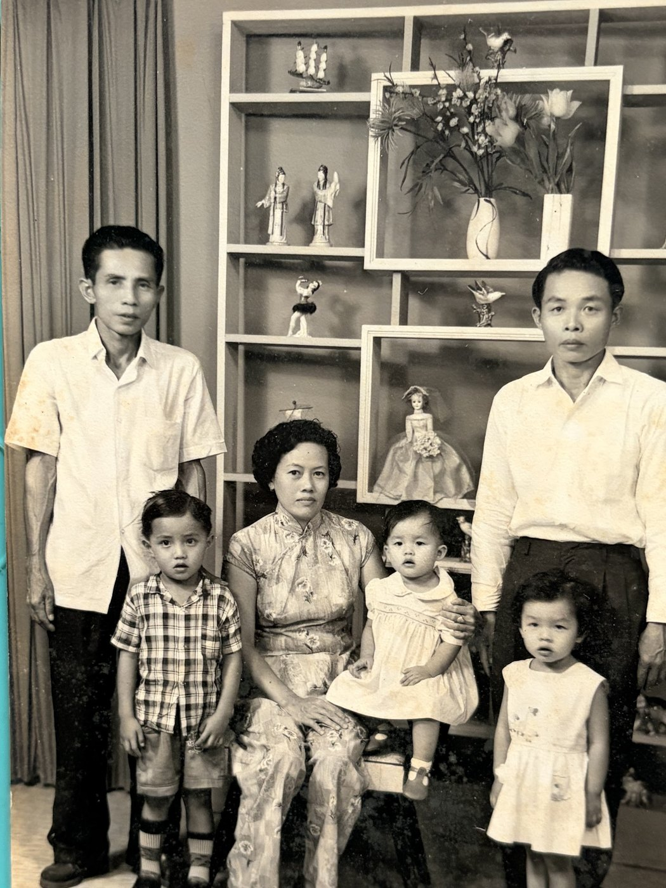
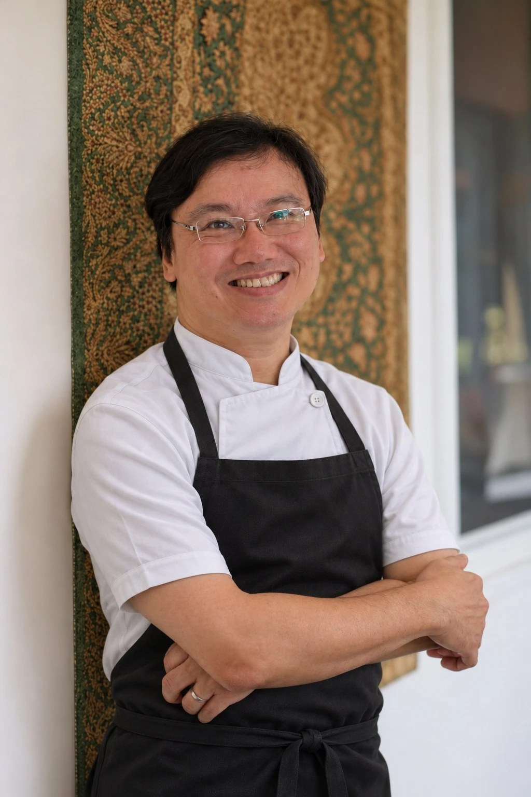
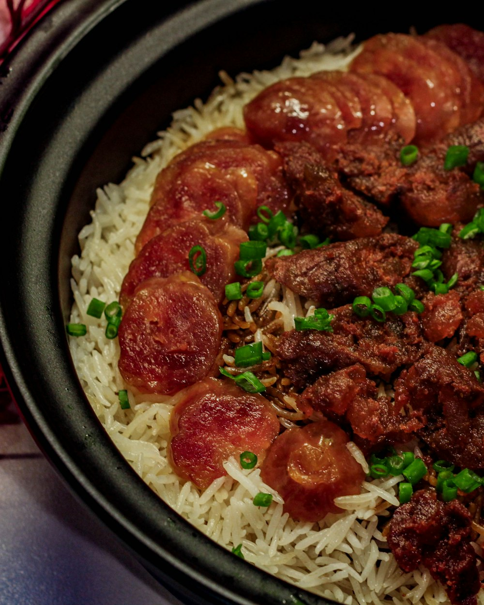
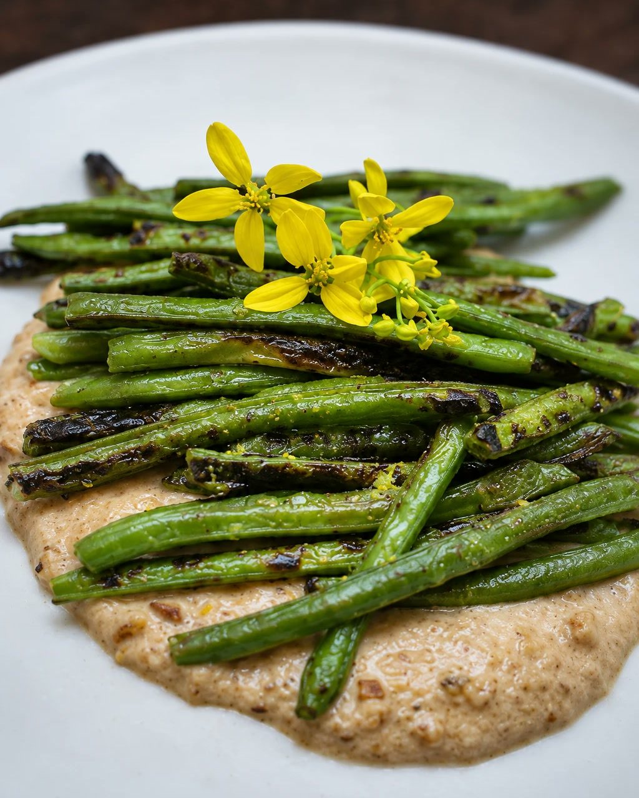
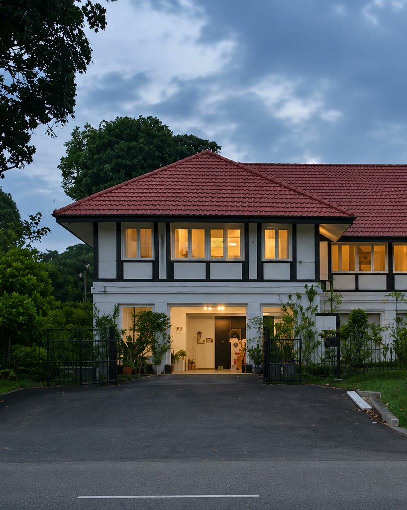

A Hainanese Family
Raised in a Hainanese family where culinary mastery was a celebrated tradition, Ian learned early that food is the ultimate expression of care and love.


Generational Hainanese Heritage. Culinary Precision.

Chef Ian’s passion for gastronomy was forged across two distinct worlds: the bustling Hainanese home kitchens of his childhood and the disciplined world of molecular biology.
At The Dinerworkshop, cherished family recipes passed down through generations are not merely repeated. They are studied, perfected, and elevated. Here, the warmth of a historic home merges with culinary precision to create an intimate dining journey.
Culinary Philosophy
We source only peak-season, prime-grade ingredients, allowing natural flavour profiles to shine.
Slow-fire heritage techniques enhanced by modern thermal precision and textural experimentation.
Every dish tells a story, whether inspired by nostalgic Hainanese roots or refined through global travels.
How It Began

Raised in a Hainanese family where culinary mastery was a celebrated tradition, Ian learned early that food is the ultimate expression of care and love.

The undisputed matriarch of the family, his maternal grandmother (“Po Po”), passed down her legendary claypot rice and slow-braised meats through the traditional Hainanese method of watch, taste, and learn.

Combining a deep reverence for traditional flavour extraction with scientific precision over temperature, texture, and timing, Ian crafts bespoke menus that honour heritage while surprising the modern palate.

Meeting his wife, a vegetarian, unlocked a new realm of plant-forward gastronomy, deepening Ian’s appreciation for the purity of botanicals.

In late 2026, after much encouragement from dining friends, The Dinerworkshop was finally created to share this intimate private dining journey with more diners.
Submit your preferred date and group size via WhatsApp, minimum 2 weeks in advance.